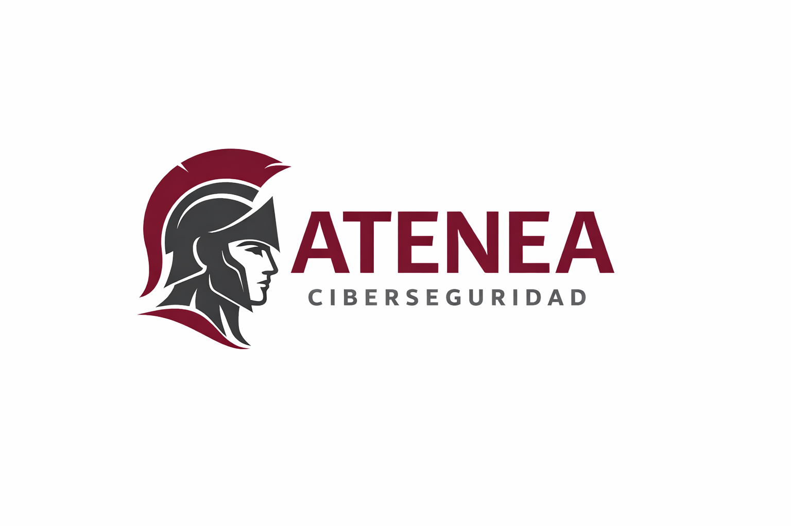

Herramientas que utilizamos

Nmap

Burp Suite

Metasploit

Wireshark

Nessus

Empresa especializada en auditorías de seguridad, pentesting y análisis de vulnerabilidades. Ayudamos a organizaciones a identificar debilidades antes de que puedan ser explotadas.
Solicitar auditoríaEvaluación técnica de sistemas para detectar vulnerabilidades y debilidades en la infraestructura.
Simulación de ataques reales para comprobar la seguridad de redes y aplicaciones.
Fortificación de sistemas, servidores y redes frente a amenazas externas.
Asesoramiento en estrategias de ciberseguridad y cumplimiento normativo.
Simulación de ataques reales para identificar vulnerabilidades en redes, sistemas y aplicaciones web.
Evaluación de infraestructuras y configuraciones de seguridad para detectar riesgos críticos.
Análisis de eventos de seguridad y detección de incidentes en tiempo real.
Nmap
Burp Suite
Metasploit
Wireshark
Nessus
Realizamos auditorías de seguridad y pruebas de penetración para identificar vulnerabilidades antes de que puedan ser explotadas por atacantes.